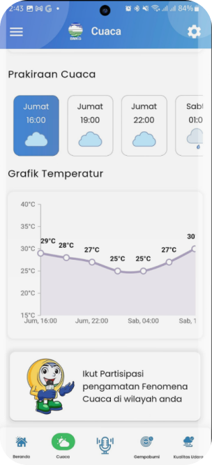
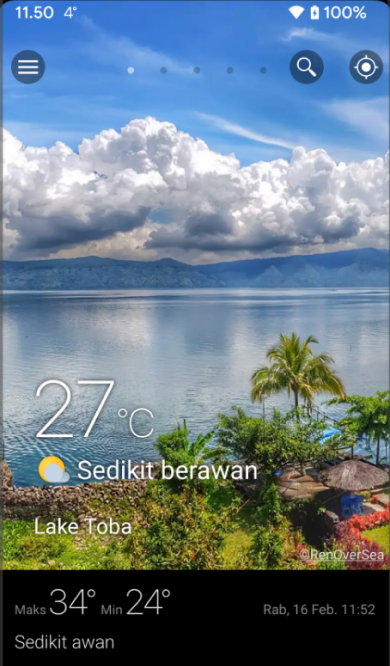
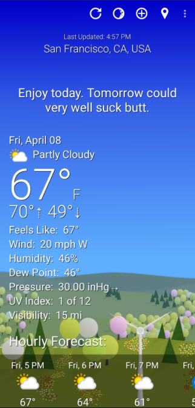
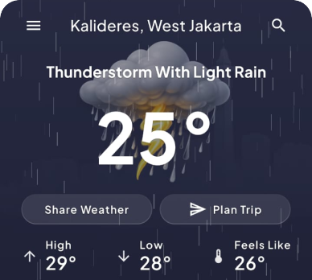
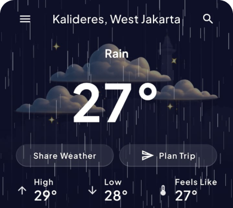
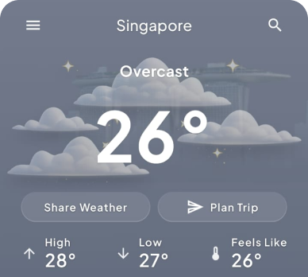
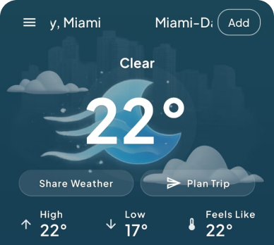
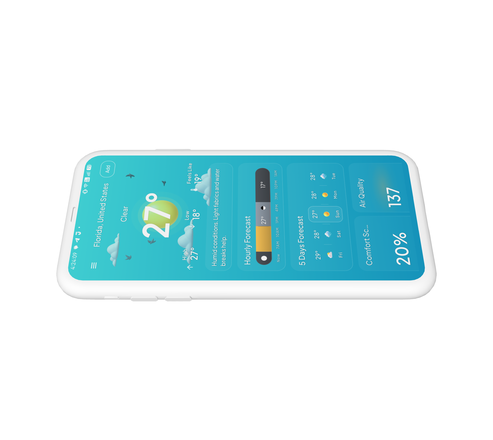
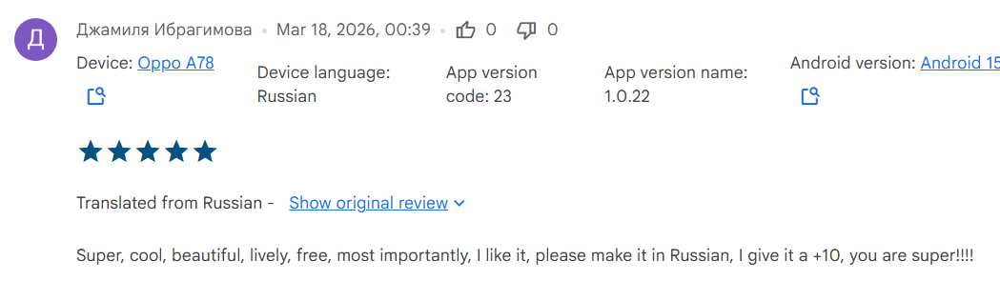

Make it understandable at a glance
The first screen should answer the most important question quickly: what kind of day is this?
A weather app focused on clearer forecasting, calmer visuals, and more human daily guidance.
Weather apps are one of the most frequently used utility products, but many still feel either too technical, too generic, or too visually disconnected from the actual mood of the day.
I wanted to explore how a weather app could become more than a place to check numbers, and instead feel like a product that helps people quickly understand the day ahead.
This project started as a vibe-coding design exploration around weather visualization, but gradually evolved into a broader product exercise: how to combine forecast data, atmospheric UI, and decision-support features into one cohesive experience.




"Weather apps show information, but they do not always help users make sense of it.
"
Even when forecast data is accurate, users still have to do a lot of mental work. They need to interpret whether the weather feels pleasant or harsh, whether a trip will be comfortable, whether rain risk is disruptive, or whether UV exposure matters enough to change behavior.
From a product perspective, the challenge became:
People check weather before commuting, before traveling, before exercising, before going out, or simply when deciding what kind of day they're stepping into.
That means even small usability issues compound quickly:
A better weather experience is not just about aesthetics. It is about reducing friction in everyday decision-making.
The first screen should answer the most important question quickly: what kind of day is this?
The interface should feel atmospheric and expressive, but never at the cost of clarity.
Features should help users decide what to do, not only show raw forecast values.
The product should support future features like warnings, trip planning, and smart summaries without feeling fragmented.
A large part of the project involved iterative exploration. Rather than locking the UI early, I treated the app as a system that needed to balance expression and utility.

Early visual exploration started before the app was fully built. I wanted the visual tone to feel cozy, vibey, and storybook-like.
Instead of relying on a single illustration style for all states, I explored how different weather conditions should feel, using condition-specific moods rather than one uniform look.





The design challenge was subtlety. Too decorative, and visuals distract from the forecast. Too restrained, they lose emotional value. The goal was a visual language that reinforces the weather state while staying in the background enough for data to remain primary.
A weather app can easily become overloaded: temperature, feels like, hourly forecast, daily, humidity, UV, wind, warnings, precipitation, sunrise, sunset, and more. Showing everything equally makes nothing feel important.


Another major exploration area was deciding what should be most prominent.
A weather app can easily become overloaded: temperature, feels like, hourly forecast, daily forecast, humidity, UV, wind, warnings, precipitation, sunrise, sunset, and more. Showing everything equally makes nothing feel important.
I explored different hierarchy approaches to answer: What should users understand first? Which information is secondary? When should the UI explain versus simply display?
One of the most interesting explorations was around interpretation, helping users make sense of weather values rather than just displaying them.

Directions explored: summarizing conditions in natural language; combining current and forecast data for better guidance; route-aware trip weather summaries; contextual recommendation cards. Weather APIs don't always have perfect data coverage, so the design had to think carefully about confidence, usefulness, and transparency.

Condition-based visuals give the product personality and make the experience feel aligned with the outside world, without competing with the data.
Designed to quickly communicate what kind of day it is, with a readable structure and clear temperature hierarchy, not a data dump.
The layout prioritizes current understanding first, then unfolds into hourly, daily, and supporting metrics in a predictable rhythm.
Route and destination context make travel-related weather feel more relevant, especially for longer journeys.
Smart features translate forecast data into practical advice for everyday activities and travel, making the app feel more supportive than a raw data utility.





This project taught me that weather design is not only about presenting data cleanly. It is also about helping users build confidence in their everyday decisions.